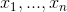
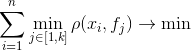
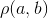
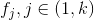
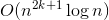
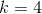
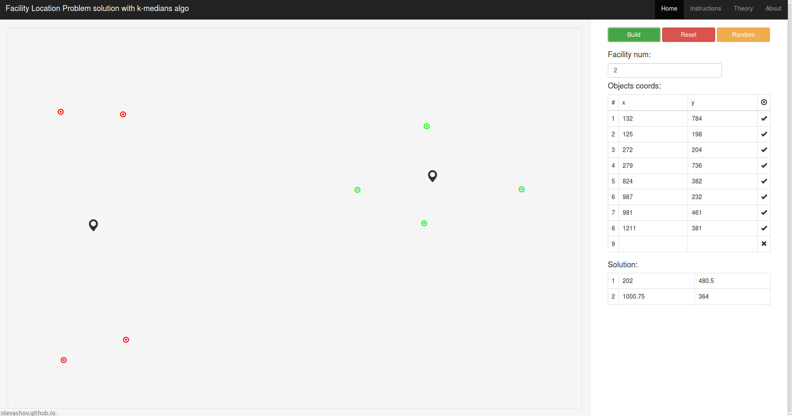
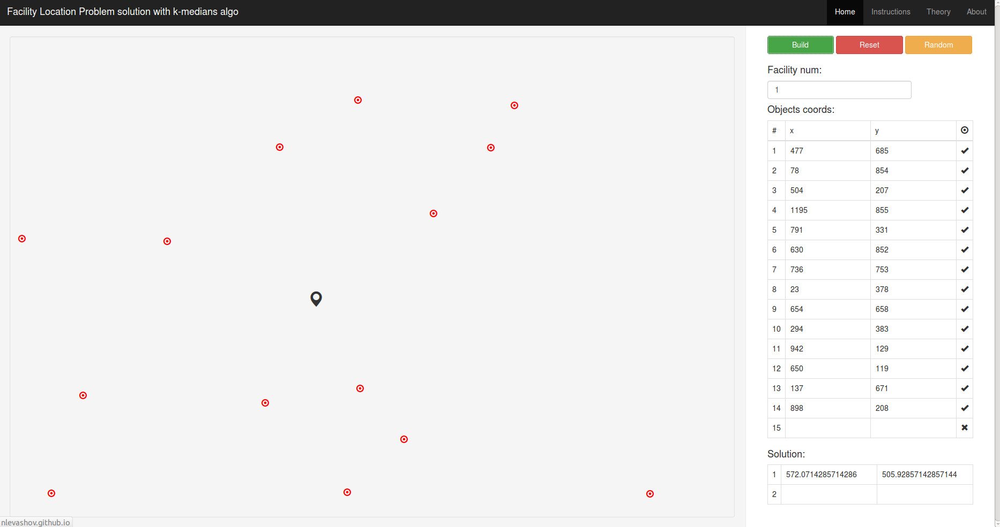
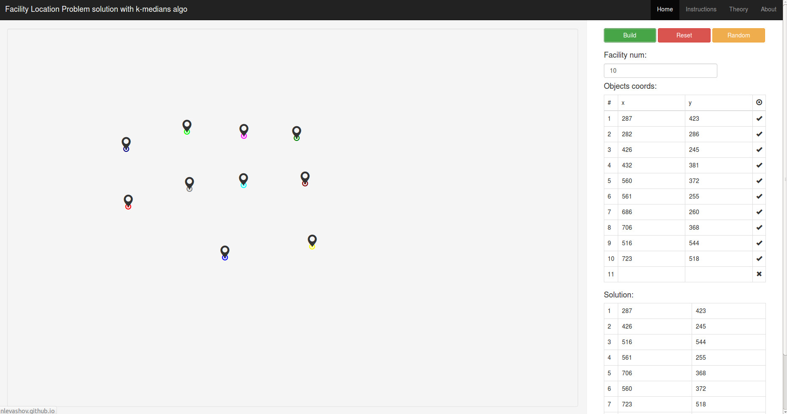
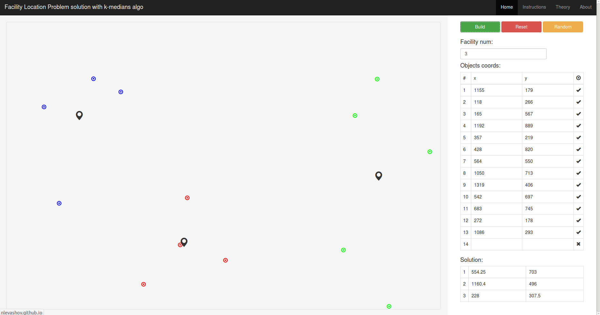

Задача о рамещении мощностей
Левашов Никита, 2 курс, группа 295, МФТИ, май 2014.
Основные цели проекта это решение задачи и демонстрация алгоритма "k-medians". Также мне хотелось показать свой проект людям, дабы они тоже могли ознкомиться с задачей и увидеть в действии алгоритм. Поэтому проект был выполнен в форме веб-сайта с удобным и понятным интерфейсом. Это, избавляя пользователей от проблем с совсестимостью, обеспечивает кроссплатформенность и доступность. Дабы расширить круг пользователей, сайт был выполнен на английском языке. Опубликован он по адресу nlevashov.github.io.
Код, выполняющий основной алгоритм был написан на языке JavaScript и располагается в файле objects.js по адресу nlevashov.github.io/js/objects.js
Сторонние библиотеки, использованные в проекте: jQuery, Bootstrap.
Если у читателя возникают какие-либо трудности, например с пониманием английского, пусть отправит свои вопросы мне на почту: niklevashov@yandex.ru, я с радостью помогу.
Описание задачи и алгоритма содержаться на сайте, в разделе "Theory", а также прикреплены к этому описанию. После них, читатель найдет примеры работы алгоритма, которые не были включены на сайт за имением удобного интерфеса, позволяющего их воссоздать в считанные секунды.
Приятного использования!
Theory
Facility Location Problem
There are  objects on map. Problem is fitting  facilities on map, so that
facilities on map, so that

where  is distance between and ,
 are sought-for facilities.
"k-medians" algo
The input of the program is objects coordinates and - facilities num.
Step 1: Choose random points.
Step 2: Divide all objects into clusters according to the following principle.
The set of objects forms a cluster around a facility which is closest to each set's object.
Step 3: Move facilities to the mass center of its cluster.
Step 4: Assume the sum of distance between each point and mass center of its cluster.
Step 5: Repeat steps 2-5 until the difference between current and previos sum from Step 4 is more than predetermined accuracy (very little number, in this realization it's 0.001).
The end of algorithm means that we cant improve situation.
About algo
The asymptotics of "k-medians" algorithm is .
The algorithm was invented by a Polish mathematician Hugo Steinhaus in 1957.
And gained popularity with James McQueen works in 1967.
The main disadvantage is that the algorithm does not guarantee the approachability of the global minimum,
just one of the local minimums. You can see it, for example, if you input
4 points which are close to each other and get . Obviosly, facilities must match with points.
But sometimes it isn't so. Actually, it depends on location of random points from the first step of the algorithm.
See also
Local Search Based Approximation Algorithms. "The k-median problem". Vinayaka Pandit IBM India Research Laboratory
CSE 291: Geometric algorithms. Sanjoy Dasgupta and Mohan Paturi
Examples
Easy example
One facility example
k = n example
Hard example
